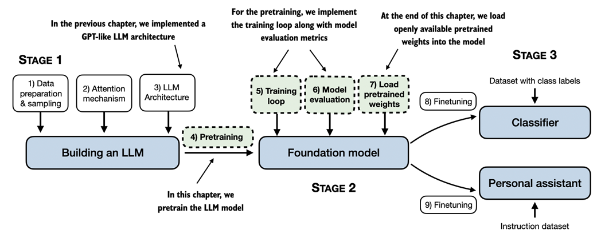
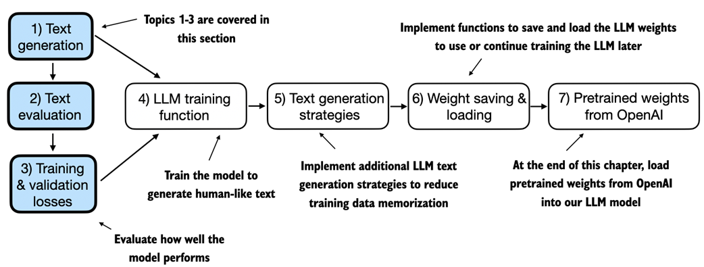
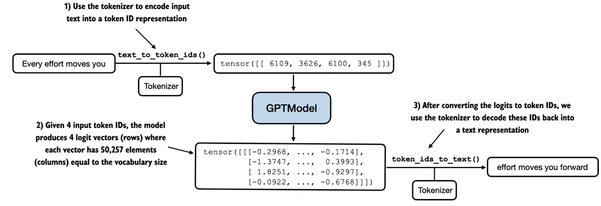
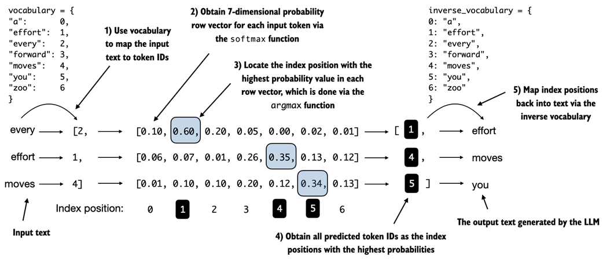
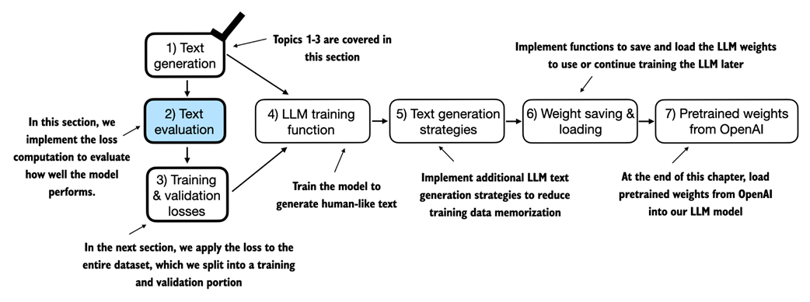
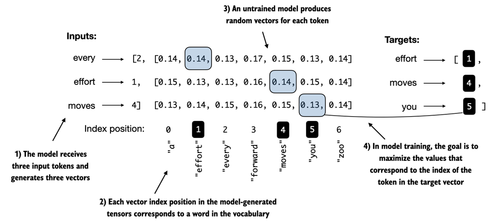
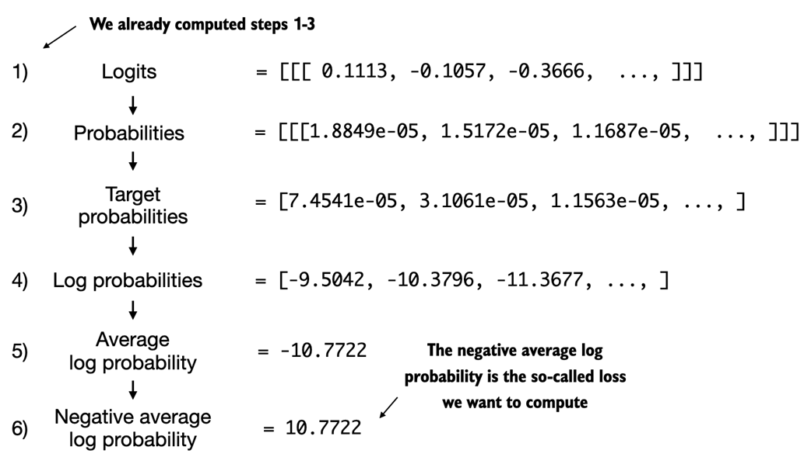
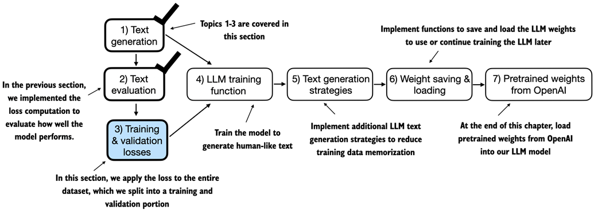
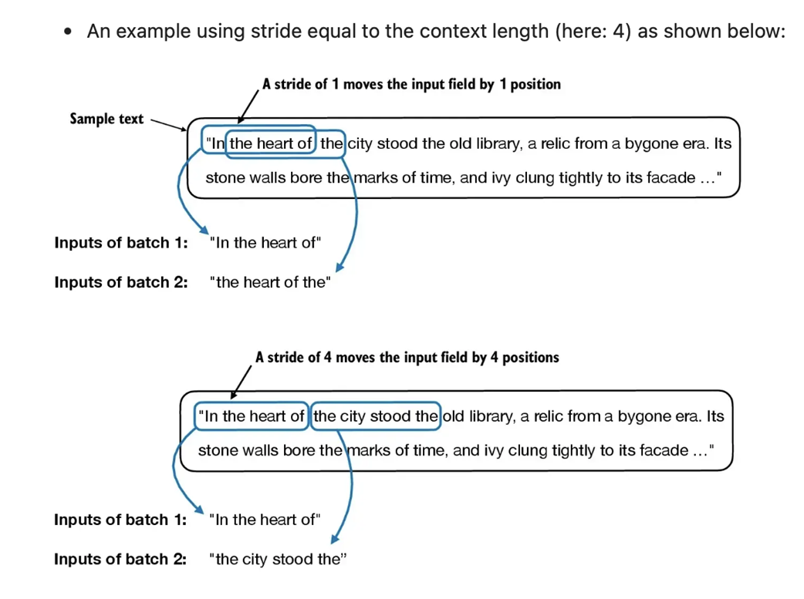
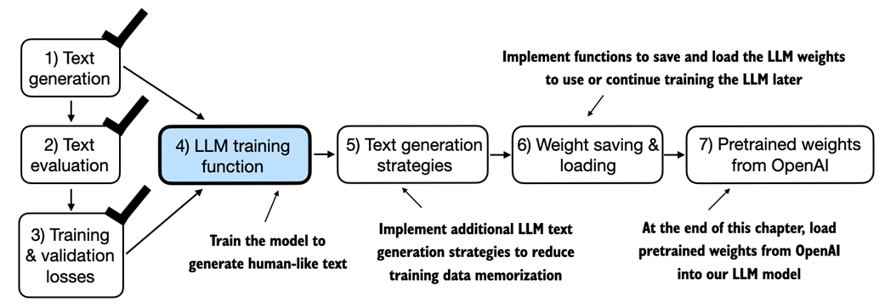

Overview
Thus far, the data sampling, attention mechanism, and LLM architecture have been implemented. It is now time to implement a training function and pretrain the LLM. This chapter covers basic model evaluation techniques to measure the quality of generated text (a requirement for optimizing the LLM during training), and discusses how to load pretrained weights to give the LLM a solid starting point for fine-tuning.

From the book (Raschka, 2025).weight. Use model.parameters() for all trainable parameters including weights and biases.
5.1 Evaluating Generative Text Models
After briefly recapping text generation from chapter 4, basic evaluation techniques and training/validation losses are introduced.

From the book (Raschka, 2025)5.1.1 Using GPT to Generate Text
The GPT model is initialized using the GPTModel class with context_length reduced to 256 tokens (from 1,024) to reduce computational demands.
GPT_CONFIG_124M = {
"vocab_size": 50257,
"context_length": 256, # Shortened from 1,024
"emb_dim": 768,
"n_heads": 12,
"n_layers": 12,
"drop_rate": 0.1,
"qkv_bias": False
}
torch.manual_seed(123)
model = GPTModel(GPT_CONFIG_124M)
model.eval()
Listing 5.1: Utility functions for text-to-token-ID conversion
def text_to_token_ids(text, tokenizer):
encoded = tokenizer.encode(text, allowed_special={'<|endoftext|>'})
encoded_tensor = torch.tensor(encoded).unsqueeze(0)
return encoded_tensor
def token_ids_to_text(token_ids, tokenizer):
flat = token_ids.squeeze(0)
return tokenizer.decode(flat.tolist())

From the book (Raschka, 2025)token_ids_to_text() converts logit-derived token IDs back to text.Output from the untrained model: "Every effort moves you rentingetic wasn? refres RexMeCHicular stren" -- random/incoherent text because no training has occurred.
5.1.2 Calculating the Text Generation Loss
Targets are inputs shifted one position forward -- crucial for teaching next-token prediction.
inputs = torch.tensor([[16833, 3626, 6100], # "every effort moves"
[40, 1107, 588]]) # "I really like"
targets = torch.tensor([[3626, 6100, 345 ], # " effort moves you"
[1107, 588, 11311]]) # " really like chocolate"

From the book (Raschka, 2025)
From the book (Raschka, 2025)# PyTorch's cross_entropy computes the same result logits_flat = logits.flatten(0, 1) targets_flat = targets.flatten() loss = torch.nn.functional.cross_entropy(logits_flat, targets_flat) # tensor(10.7940)
cross_entropy computes the negative average log probability of target tokens.
torch.exp(loss) = 48,725.8. Signifies the effective vocabulary size the model is uncertain about -- the model is unsure among ~48,725 tokens for the next prediction.
5.1.3 Calculating the Training and Validation Set Losses
A small dataset is used: "The Verdict" short story by Edith Wharton (20,479 characters, 5,145 tokens). Split 90/10 for training/validation.
Listing 5.2: Function to compute training and validation loss
def calc_loss_batch(input_batch, target_batch, model, device):
input_batch = input_batch.to(device)
target_batch = target_batch.to(device)
logits = model(input_batch)
loss = torch.nn.functional.cross_entropy(
logits.flatten(0, 1), target_batch.flatten()
)
return loss
def calc_loss_loader(data_loader, model, device, num_batches=None):
total_loss = 0.
if len(data_loader) == 0:
return float("nan")
elif num_batches is None:
num_batches = len(data_loader)
else:
num_batches = min(num_batches, len(data_loader))
for i, (input_batch, target_batch) in enumerate(data_loader):
if i < num_batches:
loss = calc_loss_batch(input_batch, target_batch, model, device)
total_loss += loss.item()
else:
break
return total_loss / num_batches
Initial losses: Training = 10.988, Validation = 10.981 (high because model hasn't been trained).
5.2 Training an LLM

From the book (Raschka, 2025)Listing 5.3: Main function for pretraining LLMs
def train_model_simple(model, train_loader, val_loader,
optimizer, device, num_epochs,
eval_freq, eval_iter, start_context, tokenizer):
train_losses, val_losses, track_tokens_seen = [], [], []
tokens_seen, global_step = 0, -1
for epoch in range(num_epochs):
model.train()
for input_batch, target_batch in train_loader:
optimizer.zero_grad()
loss = calc_loss_batch(input_batch, target_batch, model, device)
loss.backward()
optimizer.step()
tokens_seen += input_batch.numel()
global_step += 1
if global_step % eval_freq == 0:
train_loss, val_loss = evaluate_model(
model, train_loader, val_loader, device, eval_iter)
train_losses.append(train_loss)
val_losses.append(val_loss)
track_tokens_seen.append(tokens_seen)
print(f"Ep {epoch+1} (Step {global_step:06d}): "
f"Train loss {train_loss:.3f}, Val loss {val_loss:.3f}")
generate_and_print_sample(model, tokenizer, device, start_context)
return train_losses, val_losses, track_tokens_seen
Training for 10 epochs takes ~5 minutes on a MacBook Air:
- Training loss improves from 9.781 to 0.391
- Language skills progress from commas only, to repeated "and", to grammatically correct text
- Validation loss decreases but stabilizes at 6.452 (overfitting expected with small dataset)

From the book (Raschka, 2025)5.3 Decoding Strategies to Control Randomness
Two techniques to generate more original text: temperature scaling and top-k sampling.
5.3.1 Temperature Scaling
- Greedy decoding: always selects the token with the highest probability (deterministic)
- Probabilistic sampling: uses
torch.multinomialto sample proportional to probabilities - Temperature scaling: divides logits by temperature before softmax
def softmax_with_temperature(logits, temperature):
scaled_logits = logits / temperature
return torch.softmax(scaled_logits, dim=0)

From the book (Raschka, 2025)5.3.2 Top-k Sampling
Restricts sampled tokens to the top-k most likely, masking all others with -inf before softmax.

From the book (Raschka, 2025)top_k = 3
top_logits, top_pos = torch.topk(next_token_logits, top_k)
new_logits = torch.where(
condition=next_token_logits < top_logits[-1],
input=torch.tensor(float('-inf')),
other=next_token_logits
)
topk_probas = torch.softmax(new_logits, dim=0)
# tensor([0.0615, 0.0000, 0.0000, 0.5775, 0.0000, 0.0000, 0.0000, 0.3610, 0.0000])
5.3.3 Modifying the Text Generation Function
Listing 5.4: Modified text generation with temperature and top-k
def generate(model, idx, max_new_tokens, context_size,
temperature=0.0, top_k=None, eos_id=None):
for _ in range(max_new_tokens):
idx_cond = idx[:, -context_size:]
with torch.no_grad():
logits = model(idx_cond)
logits = logits[:, -1, :]
if top_k is not None:
top_logits, _ = torch.topk(logits, top_k)
min_val = top_logits[:, -1]
logits = torch.where(
logits < min_val,
torch.tensor(float('-inf')).to(logits.device),
logits)
if temperature > 0.0:
logits = logits / temperature
probs = torch.softmax(logits, dim=-1)
idx_next = torch.multinomial(probs, num_samples=1)
else:
idx_next = torch.argmax(logits, dim=-1, keepdim=True)
if idx_next == eos_id:
break
idx = torch.cat((idx, idx_next), dim=1)
return idx
With top_k=25, temperature=1.4: "Every effort moves you stand to work on surprise, a one of us had gone with random-" -- very different from the deterministic memorized output.
5.4 Loading and Saving Model Weights in PyTorch
torch.save(model.state_dict(), "model.pth")
model = GPTModel(GPT_CONFIG_124M)
model.load_state_dict(torch.load("model.pth", map_location=device))
model.eval()
Save both model and optimizer state for resuming training (AdamW stores per-parameter learning rate history):
# Save
torch.save({
"model_state_dict": model.state_dict(),
"optimizer_state_dict": optimizer.state_dict(),
}, "model_and_optimizer.pth")
# Load
checkpoint = torch.load("model_and_optimizer.pth", map_location=device)
model = GPTModel(GPT_CONFIG_124M)
model.load_state_dict(checkpoint["model_state_dict"])
optimizer = torch.optim.AdamW(model.parameters(), lr=5e-4, weight_decay=0.1)
optimizer.load_state_dict(checkpoint["optimizer_state_dict"])
model.train()
5.5 Loading Pretrained Weights from OpenAI
OpenAI openly shared GPT-2 weights, eliminating the need for expensive retraining. Weights were originally saved via TensorFlow.
from gpt_download import download_and_load_gpt2
settings, params = download_and_load_gpt2(model_size="124M", models_dir="gpt2")
print("Settings:", settings)
# {'n_vocab': 50257, 'n_ctx': 1024, 'n_embd': 768, 'n_head': 12, 'n_layer': 12}
print("Token embedding shape:", params["wte"].shape)
# (50257, 768)

From the book (Raschka, 2025)Listing 5.5: Loading OpenAI weights into our GPT model code
def load_weights_into_gpt(gpt, params):
gpt.pos_emb.weight = assign(gpt.pos_emb.weight, params['wpe'])
gpt.tok_emb.weight = assign(gpt.tok_emb.weight, params['wte'])
for b in range(len(params["blocks"])):
q_w, k_w, v_w = np.split(
(params["blocks"][b]["attn"]["c_attn"])["w"], 3, axis=-1)
gpt.trf_blocks[b].att.W_query.weight = assign(..., q_w.T)
gpt.trf_blocks[b].att.W_key.weight = assign(..., k_w.T)
gpt.trf_blocks[b].att.W_value.weight = assign(..., v_w.T)
# ... bias vectors, output projection, feed-forward, layer norms
gpt.final_norm.scale = assign(gpt.final_norm.scale, params["g"])
gpt.final_norm.shift = assign(gpt.final_norm.shift, params["b"])
gpt.out_head.weight = assign(gpt.out_head.weight, params["wte"])
out_head.weight is assigned the same value as the token embedding (params["wte"]). GPT-2 reused token embedding weights in the output layer to reduce total parameter count.
After loading, the model generates coherent text: "Every effort moves you toward finding an ideal new way to practice something! What makes us want to be on top of that?"
Summary
- LLMs generate text one token at a time; by default using greedy decoding (highest probability token)
- Probabilistic sampling and temperature scaling influence diversity and coherence of generated text
- Training and validation losses gauge quality of text during training
- Pretraining involves changing weights to minimize training loss using cross entropy and AdamW optimizer
- Pretraining on large text corpora is time/resource intensive; openly available pretrained weights offer an alternative
- Top-k sampling restricts token selection to the k most likely candidates
- Model weights can be saved and loaded via
state_dictfor reuse and continued training